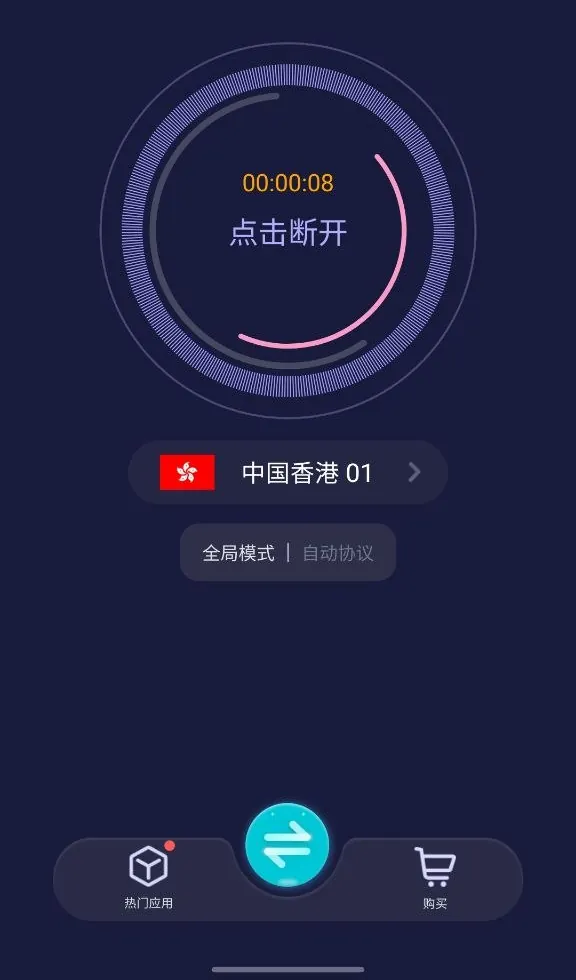

使用教程
优途加速器怎么用：首次连接与模式选择
第一次使用不用把每个设置都改一遍。先安装客户端、选择一个节点并连接；只有遇到特定应用无法访问，才需要调整加速范围。
第一次连接：先完成这四步
第一次连接后怎样确认可用？
- 先打开一个平时可以访问的普通网页，确认浏览器本身没有离线。
- 再打开实际需要使用的网站或应用，观察是否加载正常。仅有计时器、节点延迟或系统 VPN 图标，都不能替代这一步。
- 如果目标应用打不开，先确认它是否被选入“指定加速”；再尝试其他节点。不要连续反复安装客户端。
- 按设备进入下载安装说明。Windows 版有绿色版和安装版；Android 需要从官网获取安装包。
- 打开客户端。可以先以游客身份体验；已经购买套餐的用户应登录购买时使用的账号。
- 在主界面选择地区或具体节点，点击中间的“点击连接”。首次使用时，如果系统弹出 VPN 配置授权，请确认是当前正在使用的客户端后按提示允许。
- 等待按钮状态变化，再打开日常使用的网站或应用测试。仅出现 VPN 图标，并不代表目标网站一定能够访问。
智连模式和自选节点怎么选
Windows 客户端有“线路模式”，可以选择“智连”或“自选”。智连适合不想逐个挑选线路的用户；自选适合需要固定地区，或某条线路不稳定时切换具体节点的用户。

进入节点列表后，可按地区筛选，再查看具体线路。界面显示的延迟和负载是当时测得的状态，不能保证之后的连接速度。

Android 客户端可打开当前节点，进入地区列表。列表里有普通节点和高级节点分类，实际可使用的线路以当前账号和套餐为准。

全局加速和指定加速有什么区别
选择“指定加速”后，还需要在客户端里选中需要走加速通道的应用；只切换到“指定加速”却没有选择目标应用，通常达不到预期效果。不同客户端版本可能以应用列表或其他选择界面呈现。
这是“哪些应用使用加速通道”的设置，与“选择哪个地区节点”不是一回事。Android 截图中可见两种选项：
- 全局加速：让设备网络流量通过当前加速通道。适合多个应用都需要使用同一网络线路的情况；部分本地服务可能因此受到影响。
- 指定加速：仅让你选中的应用使用加速通道。适合只需要加速少数应用，希望其他应用继续使用原网络的情况。

具体选项的名称和位置会随着设备及客户端版本变化。Windows 界面中的“智连/自选”用于线路选择，不要与“全局/指定”混为一谈。
怎样选比较省事？
- 不需要固定地区：先用智连，确认连接后能正常访问目标服务。
- 某条线路连接失败，或需要指定地区：改为自选节点，对比其他线路的可用情况。
- 只有一个 Android 应用需要加速：在指定加速里选中该应用，再检查它是否能联网。
- 多个 Android 应用都需要相同线路：可以测试全局加速，但注意本地网站、支付类应用可能受影响。
显示已连接，但网站打不开怎么办
Android 连接后，主按钮可能显示“点击断开”和连接计时；系统状态栏也可能出现 VPN 图标。这些只说明客户端已建立连接状态。若网页仍打不开，先断开测试原始网络，再查看按症状排查连接问题。

需要登录、重置密码或处理游客账号，可以直接看账号与登录问题。